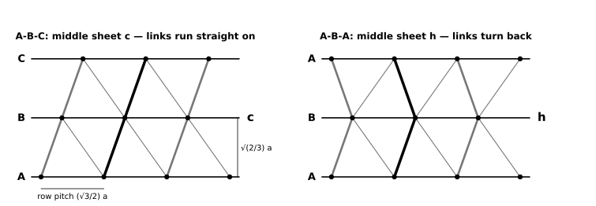
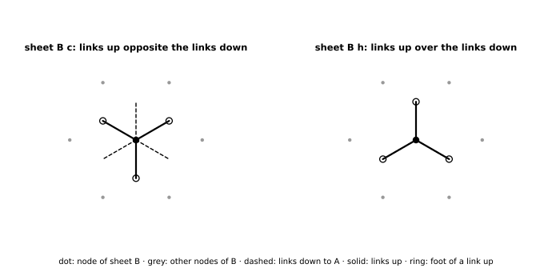

Construction specification: one continuous multi-layer knitted fabric whose sheets and links are a close-packed stacking
DICTO proposed the Knitted HexOct: one continuous multi-layer knitted fabric, built like a spacer fabric. Knitted sheets lie one above another; each sheet is one close-packed layer of balls, its nodes on a triangular lattice. Linking yarns join neighbouring sheets: each node is linked to the 3 nodes of the next sheet that its ball touches. Whether a layer is c or h is carried by the links: at a c sheet the links go on in the same turning sense as below (A→B→C), at an h sheet they turn back (A→B→A). The cells closed off by sheets and links are the pieces of the HexOct c-tiles and h-tiles (#75). Any stacking can be knitted, and the structure is in the fabric's own build through its thickness, not drawn on its surface.
Our check: scripts/check.py, exact (sympy) Sheet k lies at height k·d with d = √(2/3) a ≈ 0.8165 a. In every sheet the nodes form a triangular lattice of spacing a: node (i, j) sits at i·e₁ + j·e₂ from the sheet's origin, with e₁ = (a, 0) and e₂ = (a/2, √3 a/2), so rows of nodes are (√3/2) a ≈ 0.866 a apart. A sheet on position A has its origin at (0, 0), on B at (e₁+e₂)/3 = (a/2, a/(2√3)), on C at 2(e₁+e₂)/3. Neighbouring sheets never share a position.
The three links from an A node to the B sheet have horizontal offsets
| link | horizontal offset (plan) | direction in plan | target, in the upper sheet's own indices |
|---|---|---|---|
| 1 | (+a/2, +a/(2√3)) | 30° | (i, j) |
| 2 | (−a/2, +a/(2√3)) | 150° | (i−1, j) |
| 3 | (0, −a/√3) | 270° | (i, j−1) |
Each offset has length a/√3, so each link has length √(a²/3 + 2a²/3) = a, equal to the node spacing, and rises at arctan √2 = 54.7356° above the sheet (35.26° from the vertical). Every step to the next letter (A→B, B→C, C→A, a forward step) uses these three offsets. Every step to the previous letter (B→A, C→B, A→C, a backward step) uses the three opposite offsets, at 210°, 330° and 90°, with targets (i, j), (i+1, j), (i, j+1). All twelve cases were checked exactly: length a, tilt 54.7356°.
c and h at the next level. A sheet is c when the steps below and above it are of the same kind (both forward, as B in A-B-C, or both backward) and h when they differ (B in A-B-A). At a node of a c sheet, each of its 3 links up points exactly opposite one of its 3 links down: the two form one straight line through the node (3 of 3 checked), so the bonds run straight on through the sheet. At a node of an h sheet, each link up is the mirror image, in the sheet plane, of one link down: the same plan direction, rising instead of falling (3 of 3 checked), so the bonds fold back. This is the exact meaning of "same turning sense" and "turn back". In the section seen along a row of nodes (Figure 1) a run of c sheets shows the links as straight slants and an h sheet as a chevron, the same slant-and-chevron law as the edge-on knitted slice of #83, here built into the thickness instead of charted on a face.


The links centre the sheets. Our check: one line of algebra, plus 20 000 random shifts If sheet B is moved sideways by t from its place, the three plan offsets u1, u2, u3 (length a/√3, sum zero) become um + t, and |um + t|² = a²/3 + 2um·t + |t|². Since the um·t add up to zero, one of them is ≥ 0, so one link must cover a plan distance of at least √(a²/3 + |t|²) and the sheets can be at most √(2a²/3 − |t|²) apart. So the greatest spacing that taut links of length a allow is √(2/3) a, reached only with the sheet exactly in place. A fabric whose sheets are pulled apart (by a frame, by spacers or by stuffing) therefore takes the exact geometry by itself, c or h alike; its accuracy is that of the link lengths and the node positions.
Cells and HexOct tiles. Our check: tiles.py of #75 at λ = −1/8, exact rationals Between two sheets, sheets and links close off three kinds of cell, one of each per node of a sheet: a tetrahedron on an up-triangle of the lower sheet (three nodes and the one node above linked to all three: 3 links), a tetrahedron under a down-triangle of the upper sheet (3 links), and an octahedron between a triangle below and the opposite triangle above (6 links). All edges have length a: the sheet threads and the links are the edges of the octet's regular tetrahedra and octahedra. At the weight λ = −1/8 of the HexOct walk (the weight of the ring build) the tile pieces of #75 are exactly these cells: the two tetrahedral pieces of a layer's tile are the tetrahedra standing on and hanging from that sheet (4 nodes each, all 6 edges a), and its two octahedral halves are the octahedra above and below cut at their mid-planes (3 nodes and 6 link midpoints each). Checked for layers of A-B-C, A-B, A-B-C-B (both layers) and A-B-C-A-C-B. The c/h difference of the tiles is the difference of the links: through an h sheet the octahedron above sits straight over the octahedron below; through a c sheet it is set aside. The mid-plane halving is part of the tile, not of the fabric: no yarn lies in the mid-planes. At other weights of the walk the tiles have other shapes (#75) and are not cells of the fabric.
This is the spacer-fabric build done by hand: each sheet a firm knitted fabric whose nodes are marked stitches, each link a knitted cord from a node of one sheet to a node of the next. Double knitting is not suitable: its two layers have no gap, so the links could not have the length a (knitted-octet note, §2). The sheets close the tetrahedra and octahedra on their faces; the links are their slanted edges.
One sheet (3 × 3 nodes). Yarn: a firm, low-stretch yarn, for example mercerised cotton, DK weight, on 3.5 mm needles. Stitch: garter stitch (knit every row), which lies flat, does not curl and has little lengthwise give.
One set of links (between two sheets).
Exact and approximate (hand). Exact: which node is linked to which, hence the c/h sequence and the structure through the thickness; the equality of the links (equal row counts). Approximate: the triangle of nodes (gauge; +1.0% in row spacing at N = 16, M = 14 with square gauge; garter also stretches crosswise, so the sheet must be held, see §4); the link length (i-cord stretches under load; a non-stretch core cord cut to length, with the i-cord knitted round it, fixes it); the node as a point (a node is a stitch, about 4.5 mm across at 22 stitches per 10 cm, against a ≈ 73 mm). Open-mesh variant: knitting the sheet threads themselves as i-cords (6 meet at each node, 3 to knit per node) gives the octet's full strut network, edges of all cells as cords; exact in connections, about twice the cord work (3 sheet cords besides the 3 link cords per node and gap), and softer (knitted-octet note, §3).
From the knitted-octet note's sources [10, 11, 12] A warp-knitted spacer fabric on a double-needle-bar Raschel machine knits two ground fabrics at once, joined by pile yarns that travel across and are knitted into both; the pile yarns' lap and the bar distance set the spacing, and several guide bars allow several pile-yarn sets. Mapping (our design, untried): front ground = sheet k, back ground = sheet k+1, each knitted as an open net with its nodes on a triangular lattice; three pile guide bars, one per link direction. In needle and course units (wale spacing w, course spacing c), links 1 and 2 shog ±nx needles with a/2 = nxw and advance ny courses with a/(2√3) = nyc; link 3 does not shog and goes back 2ny courses. Both are possible at once only if c/w = nx/(√3 ny), which is irrational for whole nx, ny and so is met only through the course density (take-down), approximately. A forward or backward step is the same machine set-up turned by 180° in plan, that is, the three pile bars lapping the opposite way. The bar distance is set so that each pile link has length a at slope 54.74°, which with the offset a/√3 gives the spacing √(2/3) a.
Sheet as a knitted triangular net (machine). Warp-knitted nets (the tulle and marquisette family) are standard; a net whose bars run in the three directions 0°, 60°, 120° with knots at the nodes would be made with pillar stitches along the wales for one direction and diagonal laps for the other two, so the same irrational ratio of course to wale spacing enters, and the net shrinks when it relaxes off the machine. Tolerances must be measured on a sample; we give none.
Exact and approximate (machine). Exact: the linking pattern (which node to which), repeated over the whole width; all links of one bar equal. Approximate: the triangle (course density, relaxation), the three bars' equal lengths (each bar has its own lap, so the three must be matched by trial). Limit: one gap per machine run. A Knitted HexOct needs every middle sheet to be the back of one gap and the front of the next. In the sources checked (knitted-octet note [7–16]) multilayer weft-knitted structures and 4-bed WholeGarment machines exist, but we found no machine knitting three or more spaced faces in one run. A multi-sheet machine fabric therefore needs either such a machine (not found) or hand joining of single-gap slabs, which doubles each shared sheet and is then no longer one continuous fabric.
Three sheets, two gaps of links, 3 × 3 nodes per sheet, knitted twice. Only the middle sheet has a type (the outer sheets' types depend on sheets that are not there).
| piece | word | steps | middle sheet | nodes | links (gap 1 + gap 2) | middle-sheet links per node (row j = 0, 1, 2) |
|---|---|---|---|---|---|---|
| T-c | A-B-C | forward, forward | c | 27 | 42 (21 + 21) | 4 5 4 · 5 6 5 · 4 5 4 (1 node with all 6) |
| T-h | A-B-A | forward, backward | h | 27 | 42 (21 + 21) | 6 6 4 · 6 6 4 · 4 4 2 (4 nodes with all 6) |
Our check: scripts/check.py The first gap is the same in both pieces (links per bottom node 1 2 2 · 2 3 3 · 2 3 3); they differ only in the second gap. In T-c the top sheet's patch moves on by (e₁+e₂)/3 again; in T-h it returns over the bottom sheet. Seen along a row (Figure 1), T-c shows straight slants and T-h a chevron; from above, the octahedral cells of the two gaps of T-h sit one over the other, those of T-c do not.
Materials (per piece; yarn amounts are our estimate, about 1 cm of yarn per stitch in DK cotton). Three garter sheets of 64 stitches × 84 rows (about 5 400 stitches, about 55 m each); 42 i-cords of about 7 cm (about 1 m of yarn each with tails); together about 210 m, that is 3 balls of 50 g DK mercerised cotton (about 100 m each) per piece, 5 balls for both pieces. Needles: 3.5 mm pair, 3.0 mm double-pointed pair. Contrast thread for 27 node marks; 42 safety pins with tags; tapestry needle; card for the link gauge; optional non-stretch core cord (42 × ℓ plus knots); for holding: an embroidery hoop or a frame for each sheet, or a 60 mm spacer block, see §4. Sizes at 22 stitches per 10 cm: a ≈ 73 mm, sheet spacing ≈ 59 mm, sheets about 29 × 19 cm (square garter gauge), piece about 13 cm thick.
Order of work. Knit 3 sheets → 21 cords up from sheet 1 → sew to sheet 2 → 21 cords up from sheet 2, targets by forward step (T-c) or backward step (T-h) → sew to sheet 3 → hold the sheets apart and measure the spacing (expect 59 mm) and the sideways position of the top sheet (T-c: moved on; T-h: over the bottom sheet).
Conclusion. The Knitted HexOct is exact in its connections and self-centring in its geometry: every link has length a, straight through c sheets and folded at h sheets, and at λ = −1/8 its cells are the pieces of the HexOct tiles. Status: specification and exact link checks done; no piece knitted yet; next step the two hand test pieces T-c and T-h.